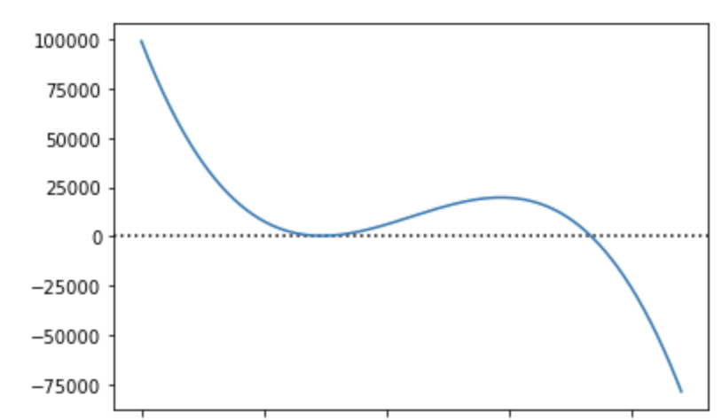

In maniera più o meno legittima, in tempi di pandemia chiunque abbia avuto un minimo di infarinatura statistica (me compreso) si è dilettato a fare modelli di evoluzione del contagio. Come data scientist, e il mio passato da matematico aiuta, ho imparato che una delle cose più importanti quando si produce un modello è cercare in tutti i modi di trovarne i limiti e comunicare le possibili fonti di errore. Tutti i modelli sono sbagliati, e non preoccuparsi delle conseguenze di questi errori, può avere e spesso ha effetti catastrofici (ci sono decine di esempi, soprattutto con gli algoritmi più sofisticati, ma questo è un discorso per una lunga serie di post).
Particolarmente grave, quindi, quando un organo ufficiale si vanta a sproposito di un proprio modello, come in questo caso
L’account del tweet (che per i non anglofoni essenzialmente dice che grazie alle nuove informazioni ottenute su COVID hanno costruito un “modello cubico” che funziona molto bene e che, come implica la figura, può essere usato per predirre l’andamento dell’epidemia negli USA) appartiene al “Council of Economic Advisers” della Casa Bianca, un organo ufficiale del governo degli USA.
A molti è saltato subito agli occhi che il “modello cubico” sembra non essere altro che un fitting polinomiale di terzo grado fatto in pochi secondi con Excel (qui, ad esempio il commento di Nate Silver, tanto per appellarsi all’autorità)
Ma il problema non è nemmeno tanto l’utilizzo di un modello semplice. Ma che il modello è fatto ad arte per mostrare che l’epidemia è quasi finita e quindi è il momento di riaprire tutto.
Che problemi ci sono con il nostro “modello cubico”?
Prima di tutto utilizza come unico fattore predittivo del numero di morti giornaliero… la data. La cosa va anche bene quando si vuole mostrare cosa succederà nel breve termine se niente cambia nell’andamento attuale, ma ha un valore predittivo molto debole e non può essere utilizzato per predire un cambio di andamento (questo, ad esempio, è un errore che ho visto commettere a fin troppi matematici a inizio epidemia, nel tentare di capire quando sarebbe arrivato “il picco” o, per i più raffinati, “il flesso”; purtroppo sapere cos’è un’esponenziale o un modello logistico non attrezza a fare previsioni in pratica).
Secondo questo modello, tra una settimana o poco più si arriva a zero contagi negli USA. Questo è il messaggio che si vuole far passare, ma è quanto meno molto poco probabile
Se non fosse stato tagliato ad arte, lo stesso modello ci dice che verso inizio dicembre l’intera popolazione mondiale è morta di COVID e non ce ne siamo accorti
Sempre estendendo il nostro “modello cubico”, questa volta nel futuro, realizziamo che intorno al 20 maggio i morti iniziano a tornare in vita in numeri sempre più abbondanti
Per capire cosa intendo negli ultimi due punti, basta osservare che una curva del tipo utilizzato nel nostro modello cubico ha, più o meno, una forma come in figura

Certamente tutto questo sostiene quanto detto da Trump a suo tempo che l’epidemia “scomparirà come fosse un miracolo”, ma aspettarsi che i morti tornino in vita è forse un po’ esagerato persino per lui. Ed è evidente che un modello che è sicuramente completamente sbagliato in 2 settimane, non ha alcun valore predittivo a una settimana.
Ma il problema grave è che stiamo parlando di un organo di stato ufficiale che spara idiozie spacciandole per certezze.
Palle cubiche, appunto.
Elon Musk con un solo tweet ha prodotto miliardi di dollari di danni a Tesla, ma qui si tratta di persone che moriranno a causa di questo tweet.
Questo non è e non può essere accettabile.
PS: non posso esimermi dal ricordare che anche in Italia alcuni economisti hanno a suo tempo previsto zero contagi per questa settimana (e a quanto pare in Piemonte non ci sono più contagi già da 2 o 3 settimane, si vede che ci siamo sbagliati tutti). A onor del vero, all’inizio gli autori hanno sottolineato come la loro fosse una semplice analisi da non usare in senso predittivo. Ma con l’attenzione mediatica (e il Corriere è responsabile in questo caso) l’iniziale cautela è stata presto abbandonata.